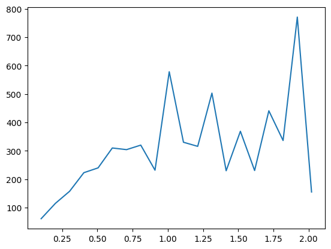
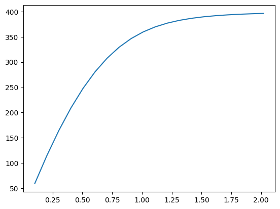

import sympy as sp
import numpy as np
from scipy.linalg import expm
import vegas
from tqdm import tqdm
import matplotlib.pyplot as pltdef Phi1(arr):
alpha1, alpha2, alpha3, phi1, phi2 = arr
x1 = np.cos(alpha1) * np.sin(phi1)
x2 = np.sin(alpha1) * np.sin(phi1)
x3 = np.sin(alpha2) * np.cos(phi1) * np.sin(phi2)
x4 = np.cos(alpha2) * np.cos(phi1) * np.sin(phi2)
x5 = np.sin(alpha3) * np.cos(phi1) * np.cos(phi2)
x6 = np.cos(alpha3) * np.cos(phi1) * np.cos(phi2)
return np.array([x1,x2,x3,x4,x5,x6])
def Phi1_inv(x1, x2, x3, x4, x5, x6):
alpha1 = np.arctan2(x2,x1)
alpha1[alpha1 < 0] += np.pi
alpha2 = np.arctan2(x3,x4)
alpha2[alpha2 < 0] += np.pi
alpha3 = np.arctan2(x5,x6)
alpha3[alpha3 < 0] += np.pi
phi1 = np.arcsin(np.sqrt(x1**2 + x2**2))
phi2 = np.zeros(len(x1))
phi2[abs(x1**2 + x2**2 - 1) >= 1e-5def Phi1(arr):
alpha1, alpha2, alpha3, phi1, phi2 = arr
x1 = np.cos(alpha1) * np.sin(phi1)
x2 = np.sin(alpha1) * np.sin(phi1)
x3 = np.sin(alpha2) * np.cos(phi1) * np.sin(phi2)
x4 = np.cos(alpha2) * np.cos(phi1) * np.sin(phi2)
x5 = np.sin(alpha3) * np.cos(phi1) * np.cos(phi2)
x6 = np.cos(alpha3) * np.cos(phi1) * np.cos(phi2)
return np.array([x1,x2,x3,x4,x5,x6])
def Phi1_inv(x1, x2, x3, x4, x5, x6):
alpha1 = np.arctan2(x2,x1)
if alpha1 < 0:
alpha1 += np.pi
alpha2 = np.arctan2(x3,x4)
if alpha2 < 0:
alpha2 += np.pi
alpha3 = np.arctan2(x5,x6)
if alpha3 < 0:
alpha3 += np.pi
phi1 = np.arcsin(np.sqrt(x1**2 + x2**2))
if abs(x1**2 + x2**2 - 1) < 1e-5:
phi2 = 0
else:
phi2 = np.arcsin(np.sqrt((x3**2+x4**2)/(1-x1**2-x2**2)))
return alpha1,alpha2,alpha3,phi1,phi2
Phi1_inv_vec = np.vectorize(Phi1_inv)
def Phi(x,y,z,t):
alpha = x + 1j*y
beta = z + 1j*t
return np.array([[alpha, -beta.conjugate()], [beta,alpha.conjugate()]])
def Phi2(alpha1, alpha2, alpha3, phi1, phi2, U):
arr00 = np.exp(1j*alpha1) * np.cos(phi1)
arr02 = np.exp(1j*alpha1) * np.sin(phi1)
arr10 = - np.exp(1j*alpha2) * np.sin(phi1) * np.sin(phi2)
arr11 = np.exp(-1j*alpha1-1j*alpha3) * np.cos(phi2)
arr12 = np.exp(1j*alpha2) * np.cos(phi1) * np.sin(phi2)
arr20 = - np.exp(1j*alpha3) * np.sin(phi1) * np.cos(phi2)
arr21 = - np.exp(-1j*alpha1-1j*alpha2) * np.sin(phi2)
arr22 = np.exp(1j*alpha3) * np.cos(phi1) * np.cos(phi2)
arr0 = np.array([[arr00, 0, arr02],[arr10,arr11,arr12],[arr20,arr21,arr22]])
arr1 = np.zeros((3,3),dtype=complex)
arr1[:2,:2] = U
arr1[2,2] = 1
return arr0.dot(arr1)
def Phi3(x1, x2, x3, x4, x5, x6, x, y, z, t):
arr0 = Phi1_inv(x1, x2, x3, x4, x5, x6)
alpha1, alpha2, alpha3, phi1, phi2 = Phi1_inv(x1, x2, x3, x4, x5, x6)
U = Phi(x, y, z, t)
return Phi2(alpha1, alpha2, alpha3, phi1, phi2, U)
def diffeo(p1,p2,p3,p4,p5,t1,t2,t3):
x1 = np.cos(p1)
x2 = np.sin(p1) * np.cos(p2)
x3 = np.sin(p1) * np.sin(p2) * np.cos(p3)
x4 = np.sin(p1) * np.sin(p2) * np.sin(p3) * np.cos(p4)
x5 = np.sin(p1) * np.sin(p2) * np.sin(p3) * np.sin(p4) * np.cos(p5)
x6 = np.sin(p1) * np.sin(p2) * np.sin(p3) * np.sin(p4) * np.sin(p5)
y1 = np.cos(t1)
y2 = np.sin(t1) * np.cos(t2)
y3 = np.sin(t1) * np.sin(t2) * np.cos(t3)
y4 = np.sin(t1) * np.sin(t2) * np.sin(t3)
return x1,x2,x3,x4,x5,x6,y1,y2,y3,y4
def jacob(p1,p2,p3,p4,p5,t1,t2,t3):
arg0, arg1, arg2, arg3, arg4, arg5, arg6, arg7, arg8, arg9 = diffeo(p1,p2,p3,p4,p5,t1,t2,t3)
return Phi3(arg0, arg1, arg2, arg3, arg4, arg5, arg6, arg7, arg8, arg9)
def jacob_vec(p1,p2,p3,p4,p5,t1,t2,t3):
x1, x2, x3, x4, x5, x6, y1, y2, y3, y4 = diffeo(p1,p2,p3,p4,p5,t1,t2,t3)
Phi2_vec = np.vectorize(Phi2)
alpha1, alpha2, alpha3, phi1, phi2 = Phi1_inv_vec(x1, x2, x3, x4, x5, x6)
U = Phi(y1, y2, y3, y4)
return Phi2_vec(alpha1, alpha2, alpha3, phi1, phi2, U)
def jacob(arr):
p1,p2,p3,p4,p5,t1,t2,t3 = arr
arg0, arg1, arg2, arg3, arg4, arg5, arg6, arg7, arg8, arg9 = diffeo(p1,p2,p3,p4,p5,t1,t2,t3)
integrand = Phi3(arg0, arg1, arg2, arg3, arg4, arg5, arg6, arg7, arg8, arg9)
return integrand
def char(p,q,M):
A, B, C = -1j * np.log(np.linalg.eig(M)[0])
if A != B:
s = 8*np.sin(0.5*(A-B))*np.sin(0.5*(A+2*B))*np.sin(0.5*(2*A+B))
term1 = np.exp(1j*p*A-1j*q*B) - np.exp(-1j*q*A+1j*p*B)
term2 = np.exp(-1j*p*(A+B)) * (np.exp(-1j*q*A)-np.exp(-1j*q*B))
term3 = np.exp(1j*q*(A+B)) * (np.exp(1j*p*B)-np.exp(1j*p*A))
return -1j/s * (term1 + term2 + term3)
elif A == B and A != 0:
s = 8 * np.sin(3/2 * A)**2
term1 = np.exp(1j*(p-q)*A) * (p+q)
term2 = - np.exp(-(q+2*p)*1j*A) * q
term3 = - np.exp((2*q+p)*1j*A) * p
return 2/s * (term1 + term2 + term3)
else:
return 1/2 * (p*q)*(p+q)
def test(arr):
M = jacob(arr)
p1,p2,p3,p4,p5,t1,t2,t3 = arr
#res = M[0,1] * np.conj(M[0,1])
#res = 1
#res = M[0,1] * M[1,2] * M[2,0]
chi1 = char(3,2,M)
chi2 = char(3,2,M)
res = chi1 * np.conj(chi2)
result = res/(2*np.pi**5) * np.sin(p1)**4 * np.sin(p2)**3 * np.sin(p3)**2 * np.sin(p4) * np.sin(t1)**2 * np.sin(t2)
return [np.real(result), np.imag(result)]
ls = []
for _ in range(2):
ls.append([0,np.pi])
ls.append([0,2*np.pi])
for _ in range(4):
ls.append([0,np.pi])
ls.append([0,2*np.pi])
integ = vegas.Integrator(ls)
result = integ(test, nitn=10, neval=10000)
print(result.summary())
print('result = %s Q = %.2f' % (result, result.Q))
result[0].meanitn integral wgt average chi2/dof Q
-------------------------------------------------------
1 0.793(66) 0.793(66) 0.00 1.00
2 1.009(51) 0.927(40) 3.37 0.03
3 0.929(39) 0.928(28) 1.68 0.15
4 1.026(47) 0.954(24) 1.66 0.13
5 0.999(36) 0.968(20) 1.37 0.20
6 0.993(41) 0.973(18) 1.13 0.33
7 1.016(38) 0.981(16) 1.03 0.42
8 0.982(24) 0.981(14) 0.88 0.58
9 0.988(24) 0.983(12) 0.77 0.72
10 1.017(23) 0.990(10) 0.79 0.72
result = [0.990(10) 0(0)] Q = 0.720.9897942070991123N = 10
def fourier(f,p,q):
def integrand(arr):
M = jacob(arr)
p1,p2,p3,p4,p5,t1,t2,t3 = arr
res = f(arr) * np.conj(char(p,q,M))
result = res/(2*np.pi**5) * np.sin(p1)**4 * np.sin(p2)**3 * np.sin(p3)**2 * np.sin(p4) * np.sin(t1)**2 * np.sin(t2)
return [np.real(result), np.imag(result)]
result = integ(integrand, nitn=1, neval=1000)
return result[0].mean + 1j * result[1].mean
def f(arr,param):
U = jacob(arr)
return np.exp(2*param*(np.real(U.trace())-3))
fourier_vec = np.vectorize(fourier)
def Z(param):
s = 0
p = np.arange(1,10)
q = np.arange(1,10)
P,Q = np.meshgrid(p,q)
d = 1/2 * P * Q * (P + Q)
arr = (1/d * fourier_vec(lambda arr:f(arr,param),P,Q))**(N**2)
return np.real(np.sum(arr))
Z_vec = np.vectorize(Z)
fourier(lambda arr:f(arr,1),10,1), fourier_vec(lambda arr:f(arr,1),[10,1],[1,2])((-0.00015444250341588273-0.0003529642152264551j),
array([-0.000878 -0.00050556j, 0.01033026+0.00030084j]))betas = np.linspace(0,10,100)
Z_ls = []
my_list = range(len(betas))
for item in tqdm(my_list):
Z_ls.append(Z(betas[item]))100%|█████████████████████████████████████████| 100/100 [30:05<00:00, 18.06s/it]action = - betas[1::] * np.diff(np.log(Z_ls))/np.diff(betas)
plt.plot(betas[1::],action)/var/folders/h7/_hqqwrk517z46v06lptyq1580000gn/T/ipykernel_21924/2782762616.py:1: RuntimeWarning: divide by zero encountered in log
action = - betas[1::] * np.diff(np.log(Z_ls))/np.diff(betas)
Z_ls[9.428627640562937,
3.5018645664190924e-26,
4.143630223814381e-51,
6.7461415281533596e-74,
4.3386645494414637e-98,
6.5045409147001e-119,
2.445217548249202e-141,
3.382591152549654e-160,
1.4591107665111875e-177,
9.699892801484076e-189,
7.492669966680047e-214,
6.999538232748974e-227,
2.6570605068488686e-238,
4.185083551485779e-255,
3.1340733614122495e-262,
6.667487896364471e-273,
3.703417646425793e-279,
2.0323133694664065e-290,
1.5791989867862014e-298,
3.82355274e-316,
1.65685e-319,
0.0,
0.0,
0.0,
0.0,
0.0,
0.0,
0.0,
0.0,
0.0,
0.0,
0.0,
0.0,
0.0,
0.0,
0.0,
0.0,
0.0,
0.0,
0.0,
0.0,
0.0,
0.0,
0.0,
0.0,
0.0,
0.0,
0.0,
0.0,
0.0,
0.0,
0.0,
0.0,
0.0,
0.0,
0.0,
0.0,
0.0,
0.0,
0.0,
0.0,
0.0,
0.0,
0.0,
0.0,
0.0,
0.0,
0.0,
0.0,
0.0,
0.0,
0.0,
0.0,
0.0,
0.0,
0.0,
0.0,
0.0,
0.0,
0.0,
0.0,
0.0,
0.0,
0.0,
0.0,
0.0,
0.0,
0.0,
0.0,
0.0,
0.0,
0.0,
0.0,
0.0,
0.0,
0.0,
0.0,
0.0,
0.0,
0.0]from scipy.integrate import nquad
def char_aux(p,q,A,B):
term1 = np.exp(1j*p*A-1j*q*B) - np.exp(-1j*q*A+1j*p*B)
term2 = np.exp(-1j*p*(A+B)) * (np.exp(-1j*q*A)-np.exp(-1j*q*B))
term3 = np.exp(1j*q*(A+B)) * (np.exp(1j*p*B)-np.exp(1j*p*A))
return -1j * (term1 + term2 + term3)
def plaq(beta,A,B):
vp1, vp2, vp3 = np.exp(1j*A), np.exp(1j*B), np.exp(1j*(-A-B))
return np.exp(2*beta*np.real((vp1+vp2+vp3-3)))
def s_(A,B):
return 8*np.sin(0.5*(A-B))*np.sin(0.5*(A+2*B))*np.sin(0.5*(2*A+B))
def coeff(beta,p,q):
return nquad(lambda A,B:plaq(beta,A,B) * np.conj(char_aux(p,q,A,B)) * s_(A,B)/ (24*np.pi**2),[[-np.pi,np.pi],[-np.pi,np.pi]])[0]
#nquad(lambda A,B:plaq(1,A,B),[[-np.pi,np.pi],[-np.pi,np.pi]])
coeff_vec = np.vectorize(coeff)
def Z(beta):
s = 0
p = np.arange(1,3)
q = np.arange(1,3)
P,Q = np.meshgrid(p,q)
d = 1/2 * P * Q * (P + Q)
arr = (1/d * coeff_vec(beta,P,Q))**(N**2)
return np.real(np.sum(arr))1.2512254229616574e-207betas = np.linspace(0,10,100)
Z_ls = []
my_list = range(len(betas))
for item in tqdm(my_list):
Z_ls.append(Z(betas[item]))100%|█████████████████████████████████████████| 100/100 [02:37<00:00, 1.58s/it]action = - betas[1::] * np.diff(np.log(Z_ls))/np.diff(betas)
plt.plot(betas[1::],action)/var/folders/h7/_hqqwrk517z46v06lptyq1580000gn/T/ipykernel_21924/2782762616.py:1: RuntimeWarning: divide by zero encountered in log
action = - betas[1::] * np.diff(np.log(Z_ls))/np.diff(betas)
Z_ls[1.0,
1.371242952150073e-26,
1.773037629859478e-51,
2.6164513977895604e-75,
5.195493118367051e-98,
1.5723846271592594e-119,
7.8012477252525305e-140,
6.437894558589258e-159,
8.454642811823144e-177,
1.6036950765732086e-193,
3.824287092252314e-209,
9.698630483376253e-224,
2.1792424675768012e-237,
3.600691150181945e-250,
3.64845952379969e-262,
1.9108966922774486e-273,
4.4210441562223244e-284,
3.919933994211506e-294,
1.1731181622946433e-303,
1.05860966845e-312,
2.61e-321,
0.0,
0.0,
0.0,
0.0,
0.0,
0.0,
0.0,
0.0,
0.0,
0.0,
0.0,
0.0,
0.0,
0.0,
0.0,
0.0,
0.0,
0.0,
0.0,
0.0,
0.0,
0.0,
0.0,
0.0,
0.0,
0.0,
0.0,
0.0,
0.0,
0.0,
0.0,
0.0,
0.0,
0.0,
0.0,
0.0,
0.0,
0.0,
0.0,
0.0,
0.0,
0.0,
0.0,
0.0,
0.0,
0.0,
0.0,
0.0,
0.0,
0.0,
0.0,
0.0,
0.0,
0.0,
0.0,
0.0,
0.0,
0.0,
0.0,
0.0,
0.0,
0.0,
0.0,
0.0,
0.0,
0.0,
0.0,
0.0,
0.0,
0.0,
0.0,
0.0,
0.0,
0.0,
0.0,
0.0,
0.0,
0.0,
0.0]/var/folders/h7/_hqqwrk517z46v06lptyq1580000gn/T/ipykernel_21924/322528484.py:1: RuntimeWarning: divide by zero encountered in log
np.log(1e-400)-infdef calculate_action(lattice,beta):
# Calculate the plaquette term in the action
i_shifted = np.roll(lattice, shift=-1, axis=0)
j_shifted = np.roll(lattice, shift=-1, axis=1)
plaq = np.matmul(lattice[..., 0, :, :], j_shifted[..., 1, :, :])
plaq = np.matmul(plaq, np.conj(i_shifted[..., 0, :, :]).transpose(0, 1, 3, 2))
plaq = np.matmul(plaq, np.conj(lattice[..., 1, :, :]).transpose(0, 1, 3, 2))
action_plaquette = np.real(3 - np.trace(plaq, axis1=-2, axis2=-1)).sum()
# Calculate the total action
return 2 * beta * action_plaquette
arr = np.random.uniform(low=0,high=1,size=(N,N,2,3,3))
calculate_action(arr,1)-430.11344364595624import numpy as np
from scipy.stats import unitary_group
def metropolis(beta,n_iterations=100000):
# Initialize lattice with random SU(2) matrices
x = unitary_group.rvs(3, size=10)
det_sign = np.sign(np.linalg.det(x))
sign_correction = (det_sign < 0) * 1j + (det_sign > 0)
arr = x * sign_correction[:, np.newaxis, np.newaxis]
lattice = np.zeros((N,N,2,3,3),dtype=complex)
lattice[:,:] = arr[:,np.newaxis]
# Apply periodic boundary conditions
lattice[0, :, :] = lattice[N-1, :, :]
lattice[:,0, :] = lattice[:, N-1, :]
action_before = calculate_action(lattice,beta)
energia = []
for iteration in range(n_iterations):
# Choose a random lattice site and direction
i = np.random.randint(N)
j = np.random.randint(N)
k = np.random.randint(2)
# Generate a random SU(2) matrix
su3_matrix = X()
new_lattice = lattice.copy()
# Update the gauge field at the chosen site
new_lattice[i, j, k] = np.matmul(su3_matrix, new_lattice[i, j, k])
# Apply periodic boundary conditions
new_lattice[0, :, :] = new_lattice[N-1, :, :]
new_lattice[:,0, :] = new_lattice[:, N-1, :]
# Calculate the action after the update
action_after = calculate_action(new_lattice,beta)
# Decide whether to accept or reject the update
if np.random.random() < np.exp(action_before - action_after):
# Accept the update
lattice = new_lattice
action_before = action_after
if iteration >= 9*n_iterations/10:
energia.append(action_before)
return np.array(energia).mean()def Phi(a,b,c,d):
x = a + 1j * b
y = c + 1j * d
return np.array([[x,-np.conj(y)],[y,np.conj(x)]])
def X():
t1 = np.random.uniform(low=0,high=np.pi,size=3)
t2 = np.random.uniform(low=0,high=np.pi,size=3)
t3 = np.random.uniform(low=0,high=2*np.pi,size=3)
y1 = np.cos(t1)
y2 = np.sin(t1) * np.cos(t2)
y3 = np.sin(t1) * np.sin(t2) * np.cos(t3)
y4 = np.sin(t1) * np.sin(t2) * np.sin(t3)
arr1 = Phi(y1[0],y2[0],y3[0],y4[0])
arr2 = Phi(y1[1],y2[1],y3[1],y4[1])
arr3 = Phi(y1[2],y2[2],y3[2],y4[2])
R, S, T = np.zeros((3,3),dtype=complex), np.zeros((3,3),dtype=complex), np.zeros((3,3),dtype=complex)
R[:2,:2] = arr1[:]
R[2,2] = 1
S = np.array([[arr2[0,0], 0, arr2[0,1]],[0, 1, 0],[arr2[1,0], 0, arr2[1,1]]])
T[0,0] =1
T[1:3,1:3] = arr3[:]
X = np.zeros((3,3),dtype=complex)
X = np.matmul(R,np.matmul(S,T))
return X
arr = X()
np.linalg.det(arr)(0.9999999999999997+5.551115123125781e-17j)import numpy as np
from scipy.stats import unitary_group
x = unitary_group.rvs(3, size=10)
det_sign = np.sign(np.linalg.det(x))
sign_correction = (det_sign < 0) * 1j + (det_sign > 0)
arr = x * sign_correction[:, np.newaxis, np.newaxis]
lattice = np.zeros((N,N,2,3,3),dtype=complex)
lattice[:,:] = arr[:,np.newaxis]
arr = lattice[0,0,0]
arr.dot(np.conj(arr.T))array([[ 1.00000000e+00+0.00000000e+00j, -8.32667268e-17+0.00000000e+00j,
-5.55111512e-17+6.93889390e-18j],
[-8.32667268e-17+0.00000000e+00j, 1.00000000e+00+0.00000000e+00j,
5.55111512e-17-8.32667268e-17j],
[-5.55111512e-17-6.93889390e-18j, 5.55111512e-17+8.32667268e-17j,
1.00000000e+00+0.00000000e+00j]])import numpy as np
from scipy.stats import unitary_group
def metropolis(beta,n_iterations=100000):
# Initialize lattice with random SU(2) matrices
x = unitary_group.rvs(3, size=10)
det_sign = np.sign(np.linalg.det(x))
sign_correction = (det_sign < 0) * 1j + (det_sign > 0)
arr = x * sign_correction[:, np.newaxis, np.newaxis]
lattice = np.zeros((N,N,2,3,3),dtype=complex)
lattice[:,:] = arr[:,np.newaxis]
# Apply periodic boundary conditions
lattice[0, :, :] = lattice[N-1, :, :]
lattice[:,0, :] = lattice[:, N-1, :]
action_before = calculate_action(lattice,beta)
energia = []
for iteration in range(n_iterations):
# Choose a random lattice site and direction
i = np.random.randint(N)
j = np.random.randint(N)
k = np.random.randint(2)
# Generate a random SU(2) matrix
su3_matrix = X()
new_lattice = lattice.copy()
# Update the gauge field at the chosen site
new_lattice[i, j, k] = np.matmul(su3_matrix, new_lattice[i, j, k])
# Apply periodic boundary conditions
new_lattice[0, :, :] = new_lattice[N-1, :, :]
new_lattice[:,0, :] = new_lattice[:, N-1, :]
# Calculate the action after the update
action_after = calculate_action(new_lattice,beta)
# Decide whether to accept or reject the update
if np.random.random() < np.exp(action_before - action_after):
# Accept the update
lattice = new_lattice
action_before = action_after
if iteration >= 9*n_iterations/10:
energia.append(action_before)
return np.array(energia).mean()
metropolis(1)--------------------------------------------------------------------------- KeyboardInterrupt Traceback (most recent call last) Cell In[120], line 55 51 energia.append(action_before) 53 return np.array(energia).mean() ---> 55 metropolis(1) Cell In[120], line 42, in metropolis(beta, n_iterations) 39 new_lattice[:,0, :] = new_lattice[:, N-1, :] 41 # Calculate the action after the update ---> 42 action_after = calculate_action(new_lattice,beta) 44 # Decide whether to accept or reject the update 45 if np.random.random() < np.exp(action_before - action_after): 46 # Accept the update Cell In[98], line 8, in calculate_action(lattice, beta) 5 j_shifted = np.roll(lattice, shift=-1, axis=1) 7 plaq = np.matmul(lattice[..., 0, :, :], j_shifted[..., 1, :, :]) ----> 8 plaq = np.matmul(plaq, np.conj(i_shifted[..., 0, :, :]).transpose(0, 1, 3, 2)) 9 plaq = np.matmul(plaq, np.conj(lattice[..., 1, :, :]).transpose(0, 1, 3, 2)) 11 action_plaquette = np.real(3 - np.trace(plaq, axis1=-2, axis2=-1)).sum() KeyboardInterrupt: